Финальный проект курса CS50
- Язык программирования C
- Язык программирования Python
- HTML+CSS
Язык программирования C
Ввод-вывод.
Функции, с помощью которых производятся ввод, очень похожи на частные случаи функции "input()" из Python.
Арифметические операции.
Основные арифметические операторы языка C:
- + оператор сложения
- - оператор вычитания
- * оператор умножения
- % оператор взятия остатка от деления
- / оператор деления
Цикл While.
В языке C бывает три вида циклов, и изучение начнётся с циклов, котрые зависят от условий. Первым для рассмотрения будет цикл while.

Пример цикла while:
В качестве первого разобранного примера, разбирается программа, вычисляющая сумму десяти введенных чисел.

Стоит обратить особое внимание на строку №13. Важно понимать что эта строка, за фигурными скобками не входит в тело цикла, значит выполняется только ОДИН раз!!
Цикл do-while.
Самое важное в этом блоке,обратить внимание на то что, хоть циклы и очень похожи,различия между ними всё же есть/
"Если нужна хотя бы одна интеграция цикла,не зависящая от условия, нужно использовать цикл do-while."
Операторы управления циклом.
Акцентировать внимание стоит на операторах break и continue:
- break - оператор прекращения цикла. Когда в теле цикла встречается этот оператор, цикл прекращает свою работу.
- continue - оператор продолжения цикла. Когда в теле цикла встречается оператор, пропускается часть тела цикла, написанная после блока continue.
Цикл for.
for - параметрический цикл (цикл с фиксированным числом повторений).
Для организации такого цикла необходимо осуществить три операции:
- Инициализация - присваивание параметру цикла начального значения.
- Условие - проверка условия повторения цикла, чаще всего - сравнение величины параметра с некоторым граничным значением.
- Модификация - изменение значения параметра для следующего прохождения тела цикла.
Функции.
Пример таблицы математических функций.
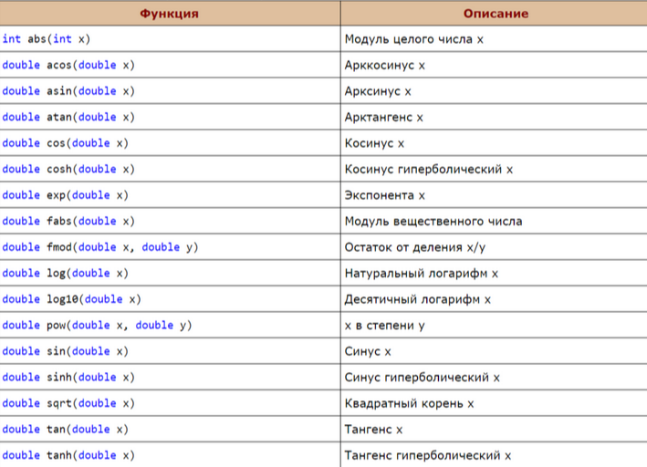
Одномерные массивы.
Массив - непрерывный участок памяти,содержащий последовательность объектов одинакового типа, обозначаемый одним именем.
Пример числового массива с инициализацией в этой же строке:
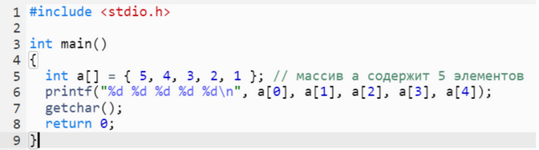
Аргуметны командной строки:

Линейный поиск.
Алгоритм линейного поиска элемента в массиве:
Сам алгоритм работает максимально легко: происходит перебор всех элементов массива и последовательного сопоставления каждого элемента с ключом. Этот алгоритм так же называется последовательным.
Бинарный поиск.
Начать стоит с того что, что это более оптимизириванный и быстрый алгоритм поиска, чем линейный поиск. Следует отметить то, что этот алгоритм поиска будет работать только если алгоритма рассортированы по возрастанию
Алгоритм сортировки выбором.


Сортировка пузырьком.
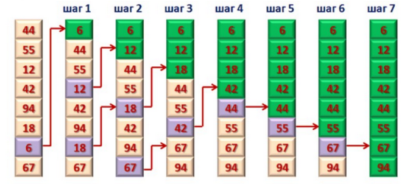
Сортировка вставками.
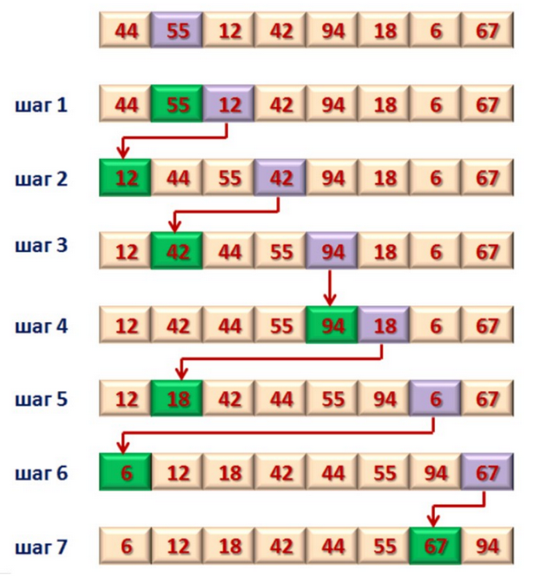
Рекурсия.
Рекурсия - процесс, во время которого функция вызывает саму себя. Компьютер лишь последовательно выполняет команды и, если встречается вызов функции,просто начинает выполнять эту функцию.
Сравнение всех алгоритмов.
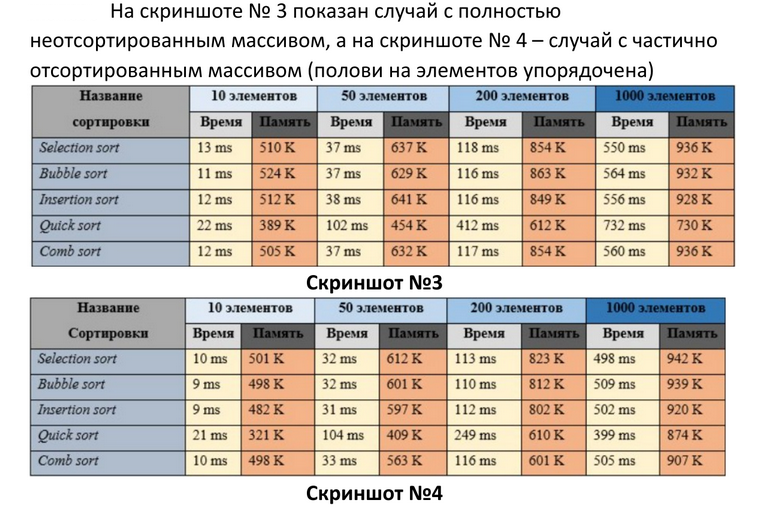
Структуры.
Структура - это объединение нескольких объектов, возможно, различного типа под одним именем, которое является типом структуры. В качестве объектов могут выступать переменные, массивы, указатели и другие структуры.
Шестнадцатеричная система счисления.
Таблица перевода с примерами перевода:
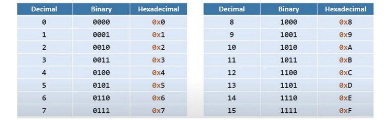
Указатели.
Указатель - переменная, содержащая адрес объекта.Указатель не несёт информации о содержимом объекта, а содержит сведения о том где размещен объект.
Для работы с указателями в C определены две операции:
- операция * (звёздочка) - позволяет получить значение объета по его адресу - определяет значение переменной, которое содержится по адресу, содержащему в указателе.
- операция & (амперсанд) - позволяет определить адрес переменной.
Динамическое распределение памяти.
Очень часто возникают задачи обработки массивов данных, размерность которых заранее неизвестна. В этом случае возможно использование одного из двух подходов:
- выделение памяти под статический массив, содержащий максимально возможное число элементов, однако в этом случае память расходуется не рационально.
- динамическое выделение памяти для хранение массива данных.
Стек вызовов функций.
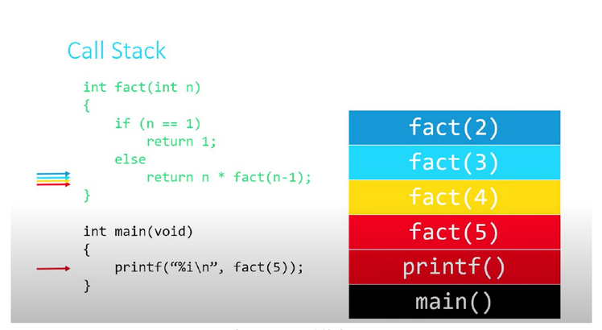
Структура данных.
Структура - это объединение нескольких элементов, возможно, различного типа под одним именем, которое является типом стуктуры. В качестве объектов могут выступать переменные, массивы, указатели и другие структуры.

Односвязный список.

Функции добавления нового узла принимает в себя два аргумента:
- Указатель на узел, после которого происходит добавление.
- Данные для добавляемого узла.

Добавление нового узла включает в себя:
- создание добавляемого узла и заполнения его поля данных.
- переустановка указателя узла, предшествующего добавляемому, не добавляемый узел.
- устаноыка указателя добавляемого узла на следующий узел (тот, на который указывал предшествующий узел).
Язык программирования Python
Цикл while.

Цикл for.
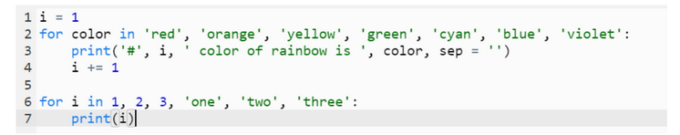
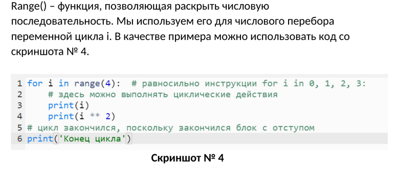
Работа со строками.
Строка пректически в любом языке - это массив символов, и Python в этом смысле не исключение. В строке, как в любом массиве возможно обращаться к элементам. Можно использовать как положительную так и отрицательную нумерацию.
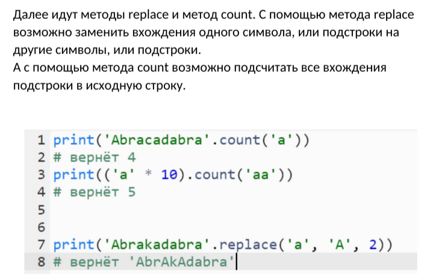
Списки.
Список отличается от массива в первую очередь тем, что может принимать в себя данные совершенно разных типов (классов).

Методы работы со списками.
split.
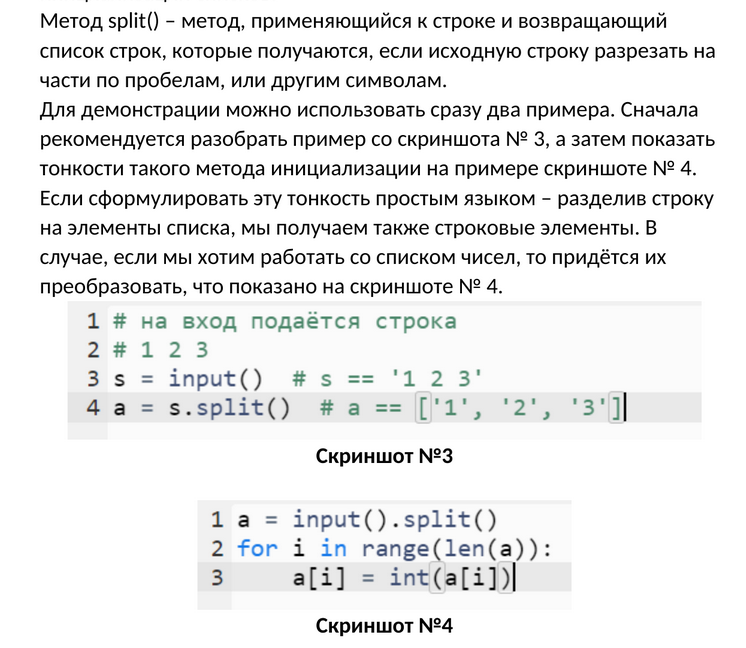
join.
Также метод join, который является обратным действием методом split (соединяет список строковых элементов воедино).
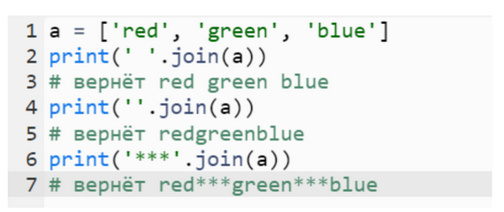
Словари.

Кортежи.
Кортежи, они же - множества, представляют из себя структуру данных, очень похожую на множества в математике. Множество может состоять из различных элементов, порядок элементов в множестве не определён. В множество можно добавлять и удалять элементы, можно перебирать элементы множества, можно выполнять операции над множествами (объединение, пересечение, разность). Можно проверять принадлежность элемента множеству. В отличии от массивов, где элементы хранятся в виде последовательного списка, в множествах порядок хранения элементов не определён ( более того, элементы множества хранятся не подряд, как в списке, а при помощи хитрых алгоритмов).

Базы данных.
Отличие базы данных от обычных электронных таблиц.
- 1. В базу данных все занесённые данные сохраняются автоматически.
- 2. В отличие от электронных таблиц, где столбцы можно вносить любые данные, в базы данных тип данных для каждого столбика определяется отдельно и при создании таблицы. То есть возможность занести неправильные данные практически искючена.
- 3. Обращение к базе данных могут выполняться с помощью языка запросов.
SQL
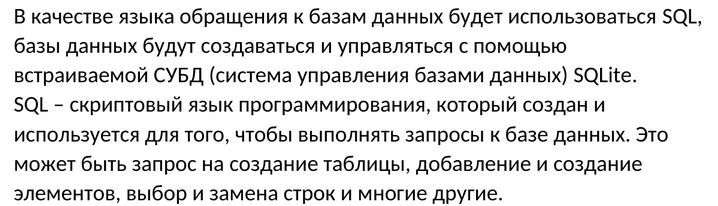


Классы.


HTTP.
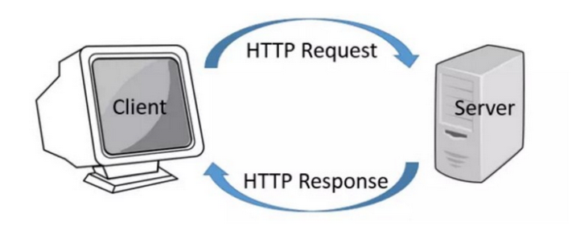

HTML+CSS
HTML.
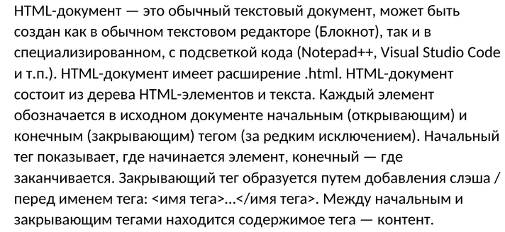

CSS.
CSS (Cascading Style Sheets) - язык таблиц стилей, который позволяет прикреплять стиль (например шрифты и цвет) к структурированным документам, в частности HTML. Объявление стиля состоит из двух частей: селектора и объявления.
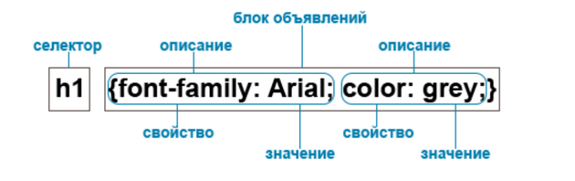

JavaScript.
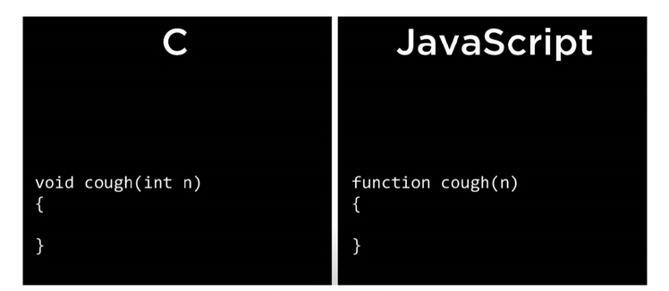


Flask.
Разница между обычным сайтом и веб-приложением.
- Веб-сайт является источником информации, в то время как веб-приложение работает в интерактивном режиме.
- Функции, задачи, пользовательский интерфейс веб-приложения гораздо сложнее.
- Веб-приложение может быть составной частью сайта либо отдельным ресурсом.
- Разработка web-сайта является более лёгким, недорогим проектом. Для разработки web-приложения требуется большая вычислительная мощность, а также различные платформы и инструменты.
- Веб-приложение является более ресурсоемким, так как может взаимодействовать с пользователем и выполнять различные действия.